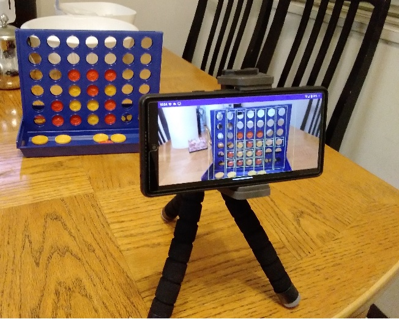

Tony Ho
Computer Vision and Machine Learning Engineer
About Me Welcome to my portfolio page! I'm currently a graduate student enrolled in Simon Fraser University's Master of Professional Computer Science program. Deep Learning and Machine Learning are fields of AI that I'm very passionate about, the impetus for my pivoting from a career in video game development to fostering a career in Machine Learning and Computer Vision. I've highlighted a few projects I've recently worked on that demonstrate my passion and software engineering proficiency in these fields.
Computer Vision
Connect4 Action AI This project trains a Faster-RCNN model to detect the state of a Connect4 board and exports it as a PyTorch Mobile model. This model performs inference on an Android smartphone and displays identified objects right on the screen. The inferred state of the board is passed to a min-max algorithm to recommend the best move for the current player.
Amazon Warehouse Classifier This project uses AWS Sagemaker to train image classification models. A ResNet34 model is trained as a benchmark, using data distributed parallelism. A ViT model is trained to investigate inherit advantages of transformer models and compare.

Natural Language Processing
Emoji Prediction This project fine-tunes a DistilBERT model on tweets to predict an appropriate emoji. Gathers real tweets using the Twitter API and filters out irrelevant tweets to build the dataset. Uses the Huggingface transformers package to implement the DistilBERT model.

Deep Reinforcement Learning
Car Avoidance This project trains a car agent to avoid obstacles in increasingly complex environments. Using Unity3D and the MLAgents package, the agent is trained using the Proximal Policy Optimization algorithm in parallel 3D environments.